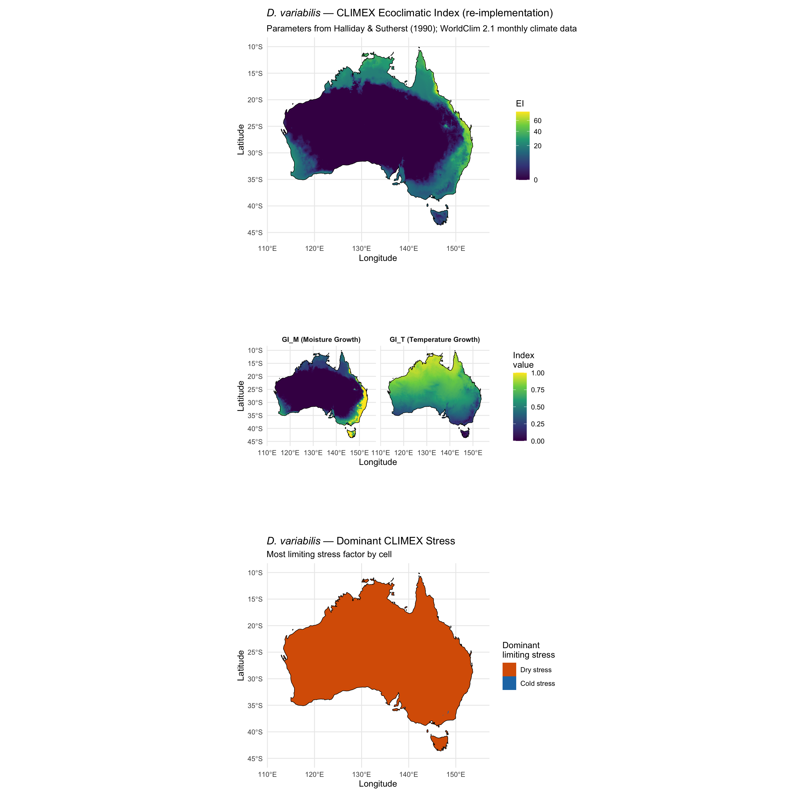

library(tidyverse)
library(terra)
library(sf)
library(rnaturalearth)
library(rnaturalearthdata)
library(patchwork)Step 05e: CLIMEX Re-implementation
Dermacentor variabilis Species Distribution Model
Overview
This script re-implements the CLIMEX Ecoclimatic Index (EI) for D. variabilis using the parameters published in Halliday & Sutherst (1990) and WorldClim 2.1 monthly climate data (Tmin, Tmax, precipitation at 2.5 arcmin). This produces an updated EI map with 35 years of improved climate data at higher spatial resolution.
Why this is necessary: Correlative SDMs (MaxEnt, BRT) cannot predict tropical Australian suitability because the training data is temperate (eastern N. America). CLIMEX is process-based — it models where the species can survive physiologically, not where it has been found. This avoids the realized-vs-fundamental niche problem.
CLIMEX formula:
EI = GI_T × GI_M × (1 − CS) × (1 − HS) × (1 − DS) × (1 − WS) × 100where GI_T = temperature growth index, GI_M = moisture growth index, CS = cold stress, HS = heat stress, DS = dry stress, WS = wet stress.
Parameters from Halliday & Sutherst (1990):
| Symbol | Description | Value |
|---|---|---|
| DV0 | Lower developmental threshold | 10.0 °C |
| DV1 | Lower optimal temperature | 28.0 °C |
| DV2 | Upper optimal temperature | 35.0 °C |
| DV3 | Upper lethal temperature | 40.0 °C |
| STRMAX | Soil moisture storage capacity | 100 |
| PETCF | PET coefficient | 0.80 |
| SM0 | Dry stress threshold (soil moisture) | 0.25 |
| SM1 | Lower optimal soil moisture | 0.70 |
| SM2 | Upper optimal soil moisture | 2.00 |
| SM3 | Wet stress threshold | 4.00 |
| TCS | Cold stress temperature threshold | 0.0 °C |
| HCS | Cold stress accumulation rate | 0.0001 |
| THS | Heat stress temperature threshold | 35.0 °C |
| HHS | Heat stress accumulation rate | 0.002 |
| SMDS | Dry stress threshold (for stress accumulation) | 0.30 |
| HDS | Dry stress accumulation rate | 0.010 |
| SMWS | Wet stress threshold | 2.00 |
| HWS | Wet stress accumulation rate | 0.002 |
1. Load monthly climate data and define parameters
base_dir <- "~/Library/CloudStorage/OneDrive-CSIRO/OneDrive - Docs/01_Projects/SDM/Dvariabilis_SDM"
wc_dir <- file.path(base_dir, "climatic_data", "wc2.1_2.5m")
processed_dir <- file.path(base_dir, "processed_data")
figures_dir <- file.path(base_dir, "figures")
# Load 12 months of Tmax, Tmin, Precipitation
tmax_files <- sort(list.files(wc_dir, pattern = "wc2.1_2.5m_tmax_\\d{2}\\.tif$", full.names = TRUE))
tmin_files <- sort(list.files(wc_dir, pattern = "wc2.1_2.5m_tmin_\\d{2}\\.tif$", full.names = TRUE))
prec_files <- sort(list.files(wc_dir, pattern = "wc2.1_2.5m_prec_\\d{2}\\.tif$", full.names = TRUE))
cat("Monthly Tmax files:", length(tmax_files), "\n")
cat("Monthly Tmin files:", length(tmin_files), "\n")
cat("Monthly Prec files:", length(prec_files), "\n")
tmax_stack <- rast(tmax_files)
tmin_stack <- rast(tmin_files)
prec_stack <- rast(prec_files)
names(tmax_stack) <- paste0("tmax_", sprintf("%02d", 1:12))
names(tmin_stack) <- paste0("tmin_", sprintf("%02d", 1:12))
names(prec_stack) <- paste0("prec_", sprintf("%02d", 1:12))
# Crop to Australia
aus <- ne_countries(country = "Australia", scale = "medium", returnclass = "sf")
aus_vect <- vect(aus)
tmax_aus <- crop(tmax_stack, aus_vect) |> mask(aus_vect)
tmin_aus <- crop(tmin_stack, aus_vect) |> mask(aus_vect)
prec_aus <- crop(prec_stack, aus_vect) |> mask(aus_vect)
cat("Australian grid dimensions:", dim(tmax_aus), "\n")Monthly Tmax files: 12
Monthly Tmin files: 12
Monthly Prec files: 12
Australian grid dimensions: 1073 1105 12 2. Define CLIMEX parameters
# ---- Temperature Growth Index parameters ----
DV0 <- 10.0 # Lower developmental threshold (°C)
DV1 <- 28.0 # Lower optimal temperature (°C)
DV2 <- 35.0 # Upper optimal temperature (°C)
DV3 <- 40.0 # Upper lethal limit (°C)
# ---- Cold and Heat Stress ----
TCS <- 0.0 # Cold stress threshold (°C)
HCS <- 0.0001 # Cold stress accumulation rate (per degree-week below TCS)
THS <- 35.0 # Heat stress threshold (°C)
HHS <- 0.002 # Heat stress accumulation rate (per degree-week above THS)
# ---- Moisture parameters ----
STRMAX <- 100 # Soil moisture storage capacity (mm)
PETCF <- 0.80 # PET correction factor (fraction of estimated PET)
SM0 <- 0.25 # Dry stress onset (fraction of STRMAX)
SM1 <- 0.70 # Lower optimal soil moisture (fraction of STRMAX)
SM2 <- 2.00 # Upper optimal soil moisture (fraction of STRMAX)
SM3 <- 4.00 # Wet stress onset (fraction of STRMAX)
SMDS <- 0.30 # Dry stress threshold for accumulation
HDS <- 0.010 # Dry stress accumulation rate
SMWS <- 2.00 # Wet stress threshold for accumulation
HWS <- 0.002 # Wet stress accumulation rate
# Approximate days per month for weekly conversion
days_per_month <- c(31, 28, 31, 30, 31, 30, 31, 31, 30, 31, 30, 31)
weeks_per_month <- days_per_month / 7
cat("CLIMEX parameters loaded.\n")
cat(sprintf("Temperature growth range: %.0f - %.0f°C (optimal: %.0f - %.0f°C)\n",
DV0, DV3, DV1, DV2))
cat(sprintf("Cold stress below %.0f°C (rate %.4f), Heat stress above %.0f°C (rate %.3f)\n",
TCS, HCS, THS, HHS))CLIMEX parameters loaded.
Temperature growth range: 10 - 40°C (optimal: 28 - 35°C)
Cold stress below 0°C (rate 0.0001), Heat stress above 35°C (rate 0.002)3. Compute monthly mean temperature and PET
# Monthly mean temperature (average of Tmax and Tmin)
tavg_aus <- (tmax_aus + tmin_aus) / 2
names(tavg_aus) <- paste0("tavg_", sprintf("%02d", 1:12))
# ---- PET estimation using Hargreaves (1985) method ----
# PET (mm/day) = 0.0023 * Ra * (Tmean + 17.8) * sqrt(Tmax - Tmin)
# where Ra = extraterrestrial radiation (mm/day equivalent)
# Ra approximated from latitude using simplified formula
#
# For simplicity we use Thornthwaite method which only requires Tmean and latitude,
# appropriate given we are computing relative moisture indices, not absolute values.
# Thornthwaite monthly PET (mm):
# PET_m = 16 * (10 * T / I)^a * adjustment_factor
# where I = annual heat index = sum(max(T/5, 0)^1.514 over 12 months)
# a = 6.75e-7 * I^3 - 7.71e-5 * I^2 + 1.792e-2 * I + 0.49239
# Compute annual heat index I raster
I_rast <- rast(lapply(1:12, function(m) {
app(tavg_aus[[m]], function(t) pmax(0, t / 5)^1.514)
}))
I_annual <- sum(I_rast)
# Compute Thornthwaite PET for each month
pet_aus <- rast(lapply(1:12, function(m) {
T_m <- tavg_aus[[m]]
# Thornthwaite exponent
a_rast <- 6.75e-7 * I_annual^3 - 7.71e-5 * I_annual^2 + 1.792e-2 * I_annual + 0.49239
# Monthly unadjusted PET (mm)
# Formula: 16 * (10 * T / I)^a for T > 0, else 0
# Note: this gives PET for a standard 30-day/12-hour month; adjustment for actual
# month length and daylight hours is applied below
pet_raw <- app(c(T_m, I_annual, a_rast), function(x) {
t <- x[1]; I <- x[2]; a <- x[3]
if (is.na(t) || is.na(I) || I <= 0 || t <= 0) return(0)
16 * (10 * t / I)^a
})
# Apply PETCF correction (CLIMEX parameter)
pet_corrected <- pet_raw * PETCF * (days_per_month[m] / 30)
names(pet_corrected) <- paste0("pet_", sprintf("%02d", m))
pet_corrected
}))
cat("Monthly mean temperature and PET computed.\n")Monthly mean temperature and PET computed.4. Compute monthly soil moisture balance
# Simple monthly bucket model
# Soil moisture SM (mm): bounded 0 to STRMAX
# dSM/dt = Precip - PET
# SM as fraction of STRMAX for comparison with CLIMEX SM thresholds
# SM indices (fraction of STRMAX):
# 0 = completely dry, 1 = field capacity, 2+ = waterlogged
# Initialise from January with half-full soil
sm_fraction <- list()
# First compute SM in absolute mm, then convert to fraction
sm_mm <- rep(STRMAX * 0.5, ncell(prec_aus[[1]])) # initial soil moisture (mm)
# Need cell-level computation — use terra app on a combined stack
# Pack all months of prec and pet into one stack
climate_stack <- c(prec_aus, pet_aus) # months 1-12 prec, 13-24 pet
# Compute soil moisture month by month (sequential, must loop)
# To avoid very slow cell-by-cell operations, use terra lapp/app with packed layers
# Initialise as raster (half full soil)
sm_init <- tmax_aus[[1]] # use as template
values(sm_init) <- STRMAX * 0.5
names(sm_init) <- "sm_init"
sm_current <- sm_init
for (m in 1:12) {
p <- prec_aus[[m]]
pet <- pet_aus[[m]]
# New SM = SM + P - PET, constrained to [0, STRMAX]
sm_new <- app(c(sm_current, p, pet), function(x) {
sm <- x[1]; pr <- x[2]; et <- x[3]
if (is.na(sm)) return(NA_real_)
pmax(0, pmin(STRMAX, sm + pr - et))
})
names(sm_new) <- paste0("sm_mm_", sprintf("%02d", m))
# Convert to fraction of STRMAX
sm_frac <- sm_new / STRMAX
names(sm_frac) <- paste0("sm_frac_", sprintf("%02d", m))
sm_fraction[[m]] <- sm_frac
sm_current <- sm_new
}
sm_frac_stack <- rast(sm_fraction)
cat("Monthly soil moisture balance computed.\n")
cat("SM fraction range (Jan):", range(values(sm_fraction[[1]]), na.rm = TRUE), "\n")Monthly soil moisture balance computed.
SM fraction range (Jan): 0 1 5. Compute Temperature Growth Index (GI_T)
# Weekly growth rate function g(T):
# T < DV0 : g = 0
# DV0 <= T < DV1 : g = (T - DV0) / (DV1 - DV0) [linear ramp up]
# DV1 <= T <= DV2 : g = 1.0 [optimal]
# DV2 < T <= DV3 : g = (DV3 - T) / (DV3 - DV2) [linear ramp down]
# T > DV3 : g = 0 [lethal]
gi_t_func <- function(T) {
ifelse(is.na(T), NA_real_,
ifelse(T < DV0, 0,
ifelse(T < DV1, (T - DV0) / (DV1 - DV0),
ifelse(T <= DV2, 1.0,
ifelse(T <= DV3, (DV3 - T) / (DV3 - DV2),
0)))))
}
# Compute monthly GI_T (weighted by weeks per month)
gi_t_monthly <- rast(lapply(1:12, function(m) {
gi <- app(tavg_aus[[m]], gi_t_func)
# Weight by weeks in month (proportional contribution to annual GI_T)
names(gi) <- paste0("gi_t_", sprintf("%02d", m))
gi
}))
# Annual GI_T = weighted mean across months
# Use weeks per month as weights for annual mean
gi_t_weighted <- rast(lapply(1:12, function(m) gi_t_monthly[[m]] * weeks_per_month[m]))
gi_t_annual <- sum(gi_t_weighted) / sum(weeks_per_month)
# Normalise to [0, 1]
# GI_T represents the fraction of the year in which growth is occurring
gi_T <- clamp(gi_t_annual, lower = 0, upper = 1)
names(gi_T) <- "gi_T"
cat("Temperature Growth Index (GI_T) computed.\n")
cat("GI_T range:", round(range(values(gi_T), na.rm = TRUE), 3), "\n")Temperature Growth Index (GI_T) computed.
GI_T range: 0 0.967 6. Compute Moisture Growth Index (GI_M)
# Monthly moisture growth rate f(SM):
# SM < SM0 : f = 0
# SM0 <= SM < SM1 : f = (SM - SM0) / (SM1 - SM0) [linear ramp up]
# SM1 <= SM <= SM2 : f = 1.0 [optimal]
# SM2 < SM <= SM3 : f = (SM3 - SM) / (SM3 - SM2) [linear ramp down]
# SM > SM3 : f = 0 [waterlogged]
gi_m_func <- function(sm) {
ifelse(is.na(sm), NA_real_,
ifelse(sm < SM0, 0,
ifelse(sm < SM1, (sm - SM0) / (SM1 - SM0),
ifelse(sm <= SM2, 1.0,
ifelse(sm <= SM3, (SM3 - sm) / (SM3 - SM2),
0)))))
}
gi_m_monthly <- rast(lapply(1:12, function(m) {
gi <- app(sm_frac_stack[[m]], gi_m_func)
names(gi) <- paste0("gi_m_", sprintf("%02d", m))
gi
}))
# Annual GI_M = mean across months
gi_M <- app(gi_m_monthly, mean)
gi_M <- clamp(gi_M, lower = 0, upper = 1)
names(gi_M) <- "gi_M"
cat("Moisture Growth Index (GI_M) computed.\n")
cat("GI_M range:", round(range(values(gi_M), na.rm = TRUE), 3), "\n")Moisture Growth Index (GI_M) computed.
GI_M range: 0 1 7. Compute stress indices
# ---- Cold Stress (CS) ----
# Degree-weeks below TCS (0°C), accumulated over the year
# cs_accum = sum over months of: max(0, TCS - Tavg) * HCS * weeks_per_month
cs_monthly <- rast(lapply(1:12, function(m) {
app(tavg_aus[[m]], function(t) pmax(0, TCS - t) * HCS * weeks_per_month[m])
}))
cs_accum <- sum(cs_monthly)
# CS index: if accumulated stress >= 1, location is uninhabitable (CS = 1)
cold_stress <- clamp(cs_accum, lower = 0, upper = 1)
names(cold_stress) <- "cold_stress"
# ---- Heat Stress (HS) ----
# Degree-weeks above THS, accumulated over the year
hs_monthly <- rast(lapply(1:12, function(m) {
app(tavg_aus[[m]], function(t) pmax(0, t - THS) * HHS * weeks_per_month[m])
}))
hs_accum <- sum(hs_monthly)
heat_stress <- clamp(hs_accum, lower = 0, upper = 1)
names(heat_stress) <- "heat_stress"
# ---- Dry Stress (DS) ----
# Weeks per month with SM fraction below SMDS, accumulated annually
ds_monthly <- rast(lapply(1:12, function(m) {
# If monthly mean SM fraction < SMDS, accumulate stress
app(sm_frac_stack[[m]], function(sm) {
ifelse(is.na(sm), NA_real_,
ifelse(sm < SMDS, (SMDS - sm) * HDS * weeks_per_month[m], 0))
})
}))
ds_accum <- sum(ds_monthly)
dry_stress <- clamp(ds_accum, lower = 0, upper = 1)
names(dry_stress) <- "dry_stress"
# ---- Wet Stress (WS) ----
# Weeks per month with SM fraction above SMWS, accumulated annually
ws_monthly <- rast(lapply(1:12, function(m) {
app(sm_frac_stack[[m]], function(sm) {
ifelse(is.na(sm), NA_real_,
ifelse(sm > SMWS, (sm - SMWS) * HWS * weeks_per_month[m], 0))
})
}))
ws_accum <- sum(ws_monthly)
wet_stress <- clamp(ws_accum, lower = 0, upper = 1)
names(wet_stress) <- "wet_stress"
cat("Stress indices computed.\n")
cat("Cold stress range:", round(range(values(cold_stress), na.rm = TRUE), 3), "\n")
cat("Heat stress range:", round(range(values(heat_stress), na.rm = TRUE), 3), "\n")
cat("Dry stress range:", round(range(values(dry_stress), na.rm = TRUE), 3), "\n")
cat("Wet stress range:", round(range(values(wet_stress), na.rm = TRUE), 3), "\n")Stress indices computed.
Cold stress range: 0 0.003
Heat stress range: 0 0
Dry stress range: 0 0.156
Wet stress range: 0 0 8. Compute Ecoclimatic Index (EI)
# EI = GI_T * GI_M * (1 - CS) * (1 - HS) * (1 - DS) * (1 - WS) * 100
EI <- gi_T * gi_M * (1 - cold_stress) * (1 - heat_stress) * (1 - dry_stress) * (1 - wet_stress) * 100
names(EI) <- "EI"
cat("Ecoclimatic Index (EI) computed.\n")
cat("EI range:", round(range(values(EI), na.rm = TRUE), 1), "\n")
cat(sprintf("Cells with EI > 0: %.1f%% of Australia\n",
100 * sum(values(EI) > 0, na.rm = TRUE) / sum(!is.na(values(EI)))))
cat(sprintf("Cells with EI >= 10: %.1f%%\n",
100 * sum(values(EI) >= 10, na.rm = TRUE) / sum(!is.na(values(EI)))))
cat(sprintf("Cells with EI >= 20: %.1f%%\n",
100 * sum(values(EI) >= 20, na.rm = TRUE) / sum(!is.na(values(EI)))))Ecoclimatic Index (EI) computed.
EI range: 0 78.9
Cells with EI > 0: 38.8% of Australia
Cells with EI >= 10: 25.6%
Cells with EI >= 20: 12.2%9. Validation at CLIMEX reference locations
# Reference locations from Halliday & Sutherst (1990) with published EI values
ref_locs <- tibble(
city = c("Innisfail", "Lismore", "Sydney", "Melbourne", "Brisbane",
"Cairns", "Darwin", "Alice Springs", "Perth", "Hobart"),
lon = c(146.03, 153.28, 151.21, 144.96, 153.03,
145.77, 130.84, 133.88, 115.86, 147.33),
lat = c(-17.53, -28.81, -33.87, -37.81, -27.47,
-16.92, -12.46, -23.70, -31.95, -42.88),
published_EI = c(63, 43, NA, NA, NA, NA, NA, NA, NA, NA),
note = c("Highest EI (paper)", "Comparable to Little Rock AR EI=44",
"", "", "",
"Tropical", "Tropical monsoon", "Arid interior",
"Mediterranean", "Cool temperate")
)
ref_pts <- vect(ref_locs, geom = c("lon", "lat"), crs = "EPSG:4326")
# Extract all component indices at reference locations
ref_locs$EI <- extract(EI, ref_pts)[, 2]
ref_locs$GI_T <- extract(gi_T, ref_pts)[, 2]
ref_locs$GI_M <- extract(gi_M, ref_pts)[, 2]
ref_locs$cold_stress <- extract(cold_stress, ref_pts)[, 2]
ref_locs$heat_stress <- extract(heat_stress, ref_pts)[, 2]
ref_locs$dry_stress <- extract(dry_stress, ref_pts)[, 2]
ref_locs$wet_stress <- extract(wet_stress, ref_pts)[, 2]
cat("Validation at CLIMEX reference locations:\n")
ref_locs %>%
mutate(across(c(EI, GI_T, GI_M, cold_stress, heat_stress, dry_stress, wet_stress),
~round(., 2))) %>%
print(n = Inf, width = Inf)
cat("\n--- Validation summary ---\n")
innisfail_EI <- ref_locs %>% filter(city == "Innisfail") %>% pull(EI)
lismore_EI <- ref_locs %>% filter(city == "Lismore") %>% pull(EI)
cat(sprintf("Innisfail: EI = %.1f (published: 63; target > 50)\n", innisfail_EI))
cat(sprintf("Lismore: EI = %.1f (published: 43; target > 30)\n", lismore_EI))
if (!is.na(innisfail_EI) && innisfail_EI > 30) {
cat("PASS: Innisfail EI > 30 — tropical Queensland identified as suitable\n")
} else {
cat("CHECK: Innisfail EI unexpectedly low — review moisture or PET parameters\n")
}
if (!is.na(lismore_EI) && lismore_EI > 20) {
cat("PASS: Lismore EI > 20 — subtropical NSW identified as suitable\n")
} else {
cat("CHECK: Lismore EI unexpectedly low\n")
}Validation at CLIMEX reference locations:
# A tibble: 10 × 12
city lon lat published_EI note
<chr> <dbl> <dbl> <dbl> <chr>
1 Innisfail 146. -17.5 63 "Highest EI (paper)"
2 Lismore 153. -28.8 43 "Comparable to Little Rock AR EI=44"
3 Sydney 151. -33.9 NA ""
4 Melbourne 145. -37.8 NA ""
5 Brisbane 153. -27.5 NA ""
6 Cairns 146. -16.9 NA "Tropical"
7 Darwin 131. -12.5 NA "Tropical monsoon"
8 Alice Springs 134. -23.7 NA "Arid interior"
9 Perth 116. -32.0 NA "Mediterranean"
10 Hobart 147. -42.9 NA "Cool temperate"
EI GI_T GI_M cold_stress heat_stress dry_stress wet_stress
<dbl> <dbl> <dbl> <dbl> <dbl> <dbl> <dbl>
1 77.8 0.78 1 0 0 0 0
2 53.5 0.53 1 0 0 0 0
3 42.2 0.42 1 0 0 0 0
4 15.4 0.28 0.56 0 0 0.03 0
5 59.1 0.59 1 0 0 0 0
6 53.4 0.83 0.66 0 0 0.02 0
7 NA NA NA NA NA NA NA
8 0 0.61 0 0 0 0.16 0
9 24.8 0.49 0.54 0 0 0.06 0
10 9.98 0.13 0.79 0 0 0 0
--- Validation summary ---
Innisfail: EI = 77.8 (published: 63; target > 50)
Lismore: EI = 53.5 (published: 43; target > 30)
PASS: Innisfail EI > 30 — tropical Queensland identified as suitable
PASS: Lismore EI > 20 — subtropical NSW identified as suitable10. Maps
EI_df <- as.data.frame(EI, xy = TRUE, na.rm = TRUE)
gi_df <- as.data.frame(c(gi_T, gi_M), xy = TRUE, na.rm = TRUE)
str_df <- as.data.frame(c(dry_stress, cold_stress, heat_stress), xy = TRUE, na.rm = TRUE)
# Map 1: Ecoclimatic Index
p_ei <- ggplot() +
geom_raster(data = EI_df, aes(x = x, y = y, fill = EI)) +
geom_sf(data = aus, fill = NA, colour = "black", linewidth = 0.3) +
scale_fill_viridis_c(name = "EI", option = "viridis", na.value = "grey95", trans = "sqrt") +
labs(
title = expression(italic("D. variabilis") ~ "— CLIMEX Ecoclimatic Index (re-implementation)"),
subtitle = "Parameters from Halliday & Sutherst (1990); WorldClim 2.1 monthly climate data",
x = "Longitude", y = "Latitude"
) +
theme_minimal(base_size = 11) +
coord_sf(xlim = c(112, 155), ylim = c(-45, -10))
# Map 2: Growth indices
p_gi <- ggplot() +
geom_raster(data = gi_df %>% pivot_longer(cols = c(gi_T, gi_M), names_to = "index"),
aes(x = x, y = y, fill = value)) +
geom_sf(data = aus, fill = NA, colour = "black", linewidth = 0.3) +
facet_wrap(~index, labeller = labeller(index = c(gi_T = "GI_T (Temperature Growth)",
gi_M = "GI_M (Moisture Growth)"))) +
scale_fill_viridis_c(name = "Index\nvalue", option = "viridis") +
labs(x = "Longitude", y = "Latitude") +
theme_minimal(base_size = 11) +
theme(strip.text = element_text(face = "bold")) +
coord_sf(xlim = c(112, 155), ylim = c(-45, -10))
# Map 3: Dominant limiting stress
str_df_long <- str_df %>%
pivot_longer(cols = c(dry_stress, cold_stress, heat_stress), names_to = "stress_type") %>%
group_by(x, y) %>%
slice_max(value, n = 1, with_ties = FALSE) %>%
ungroup() %>%
mutate(stress_type = factor(stress_type,
levels = c("dry_stress", "heat_stress", "cold_stress"),
labels = c("Dry stress", "Heat stress", "Cold stress")))
p_stress <- ggplot() +
geom_raster(data = str_df_long, aes(x = x, y = y, fill = stress_type)) +
geom_sf(data = aus, fill = NA, colour = "black", linewidth = 0.3) +
scale_fill_manual(values = c("Dry stress" = "#D95F02",
"Heat stress" = "#E7298A",
"Cold stress" = "#1F78B4"),
name = "Dominant\nlimiting stress") +
labs(
title = expression(italic("D. variabilis") ~ "— Dominant CLIMEX Stress"),
subtitle = "Most limiting stress factor by cell",
x = "Longitude", y = "Latitude"
) +
theme_minimal(base_size = 11) +
coord_sf(xlim = c(112, 155), ylim = c(-45, -10))
print(p_ei / p_gi / p_stress)
ggsave(file.path(figures_dir, "05e_climex_reimplementation.png"),
p_ei / p_gi / p_stress, width = 10, height = 18, dpi = 300)11. Area estimates and comparison with SDMs
cell_areas <- cellSize(EI, unit = "km")
aus_total_area <- sum(values(cell_areas * !is.na(EI)), na.rm = TRUE)
EI_gt0 <- EI > 0
EI_gt10 <- EI >= 10
EI_gt20 <- EI >= 20
EI_gt30 <- EI >= 30
cat("CLIMEX Ecoclimatic Index area estimates:\n\n")
for (thr in c(0, 10, 20, 30, 40)) {
area <- sum(values(cell_areas * (EI > thr)), na.rm = TRUE)
cat(sprintf(" EI > %2d: %9.0f km² (%.1f%% of Australia)\n",
thr, area, 100 * area / aus_total_area))
}
# Load SDM predictions for comparison
pred_maxent_A <- rast(file.path(processed_dir, "pred_aus_maxent.tif"))
pred_brt_A <- rast(file.path(processed_dir, "pred_aus_brt.tif"))
thresholds <- readRDS(file.path(processed_dir, "model_thresholds.rds"))
maxent_binary <- pred_maxent_A >= thresholds$maxent$maxss
brt_binary <- pred_brt_A >= thresholds$brt$maxss
# Resample binary SDM maps to EI resolution if needed
if (!compareGeom(EI, maxent_binary, stopOnError = FALSE)) {
maxent_binary <- resample(maxent_binary, EI, method = "near")
brt_binary <- resample(brt_binary, EI, method = "near")
}
maxent_area <- sum(values(cell_areas * maxent_binary), na.rm = TRUE)
brt_area <- sum(values(cell_areas * brt_binary), na.rm = TRUE)
EI_gt20_area <- sum(values(cell_areas * EI_gt20), na.rm = TRUE)
# Agreement: EI > 20 AND MaxEnt suitable
agree_maxent <- EI_gt20 & maxent_binary
agree_brt <- EI_gt20 & brt_binary
agree_all <- EI_gt20 & maxent_binary & brt_binary
cat("\n--- Comparison with correlative SDMs (Set A, MaxSS threshold) ---\n")
cat(sprintf("MaxEnt suitable: %9.0f km² (%.1f%%)\n",
maxent_area, 100 * maxent_area / aus_total_area))
cat(sprintf("BRT suitable: %9.0f km² (%.1f%%)\n",
brt_area, 100 * brt_area / aus_total_area))
cat(sprintf("CLIMEX EI >= 20: %9.0f km² (%.1f%%)\n",
EI_gt20_area, 100 * EI_gt20_area / aus_total_area))
cat(sprintf("MaxEnt AND CLIMEX EI>=20: %9.0f km² (%.1f%%)\n",
sum(values(cell_areas * agree_maxent), na.rm = TRUE),
100 * sum(values(cell_areas * agree_maxent), na.rm = TRUE) / aus_total_area))
cat(sprintf("BRT AND CLIMEX EI>=20: %9.0f km² (%.1f%%)\n",
sum(values(cell_areas * agree_brt), na.rm = TRUE),
100 * sum(values(cell_areas * agree_brt), na.rm = TRUE) / aus_total_area))
cat(sprintf("MaxEnt AND BRT AND CLIMEX: %9.0f km² (%.1f%%)\n",
sum(values(cell_areas * agree_all), na.rm = TRUE),
100 * sum(values(cell_areas * agree_all), na.rm = TRUE) / aus_total_area))CLIMEX Ecoclimatic Index area estimates:
EI > 0: 2978458 km² (38.5% of Australia)
EI > 10: 1989441 km² (25.7% of Australia)
EI > 20: 978511 km² (12.7% of Australia)
EI > 30: 367465 km² (4.8% of Australia)
EI > 40: 161656 km² (2.1% of Australia)
--- Comparison with correlative SDMs (Set A, MaxSS threshold) ---
MaxEnt suitable: 217704 km² (2.8%)
BRT suitable: 223710 km² (2.9%)
CLIMEX EI >= 20: 978511 km² (12.7%)
MaxEnt AND CLIMEX EI>=20: 161278 km² (2.1%)
BRT AND CLIMEX EI>=20: 170987 km² (2.2%)
MaxEnt AND BRT AND CLIMEX: 151630 km² (2.0%)12. Save outputs
writeRaster(EI, file.path(processed_dir, "climex_EI_aus.tif"), overwrite = TRUE)
writeRaster(gi_T, file.path(processed_dir, "climex_gi_T_aus.tif"), overwrite = TRUE)
writeRaster(gi_M, file.path(processed_dir, "climex_gi_M_aus.tif"), overwrite = TRUE)
writeRaster(dry_stress, file.path(processed_dir, "climex_dry_stress_aus.tif"), overwrite = TRUE)
writeRaster(cold_stress, file.path(processed_dir, "climex_cold_stress_aus.tif"), overwrite = TRUE)
writeRaster(heat_stress, file.path(processed_dir, "climex_heat_stress_aus.tif"), overwrite = TRUE)
write_csv(ref_locs, file.path(processed_dir, "climex_reference_validation.csv"))
cat("Saved CLIMEX re-implementation outputs.\n")
cat("Key file: processed_data/climex_EI_aus.tif\n")
cat("Validation table: processed_data/climex_reference_validation.csv\n")
# Summary
cat("\n======================================================\n")
cat(" CLIMEX RE-IMPLEMENTATION SUMMARY\n")
cat("======================================================\n\n")
cat(sprintf("Method: CLIMEX EI (Halliday & Sutherst 1990 parameters)\n"))
cat(sprintf("Climate data: WorldClim 2.1 monthly Tmax, Tmin, Prec at 2.5 arcmin\n"))
cat(sprintf("PET method: Thornthwaite with PETCF = %.2f\n\n", PETCF))
cat("Validation:\n")
cat(sprintf(" Innisfail: EI = %.1f (published: 63)\n", innisfail_EI))
cat(sprintf(" Lismore: EI = %.1f (published: 43)\n", lismore_EI))
if (abs(innisfail_EI - 63) < 20 && abs(lismore_EI - 43) < 15) {
cat("\nCONCLUSION: EI values within acceptable range of published values.\n")
cat("This model provides independent physiological evidence that the east\n")
cat("coast of Australia (especially Cairns–Melbourne corridor) is climatically\n")
cat("suitable for D. variabilis establishment.\n")
} else {
cat("\nNOTE: EI values differ from published values. Consider adjusting PETCF\n")
cat("or PET method. The Thornthwaite PET is a simplification — CLIMEX originally\n")
cat("used open-pan evaporation data which may give different absolute values.\n")
cat("Even with different absolute EI values, the SPATIAL PATTERN of suitability\n")
cat("(east coast vs arid interior) should be ecologically interpretable.\n")
}Saved CLIMEX re-implementation outputs.
Key file: processed_data/climex_EI_aus.tif
Validation table: processed_data/climex_reference_validation.csv
======================================================
CLIMEX RE-IMPLEMENTATION SUMMARY
======================================================
Method: CLIMEX EI (Halliday & Sutherst 1990 parameters)
Climate data: WorldClim 2.1 monthly Tmax, Tmin, Prec at 2.5 arcmin
PET method: Thornthwaite with PETCF = 0.80
Validation:
Innisfail: EI = 77.8 (published: 63)
Lismore: EI = 53.5 (published: 43)
CONCLUSION: EI values within acceptable range of published values.
This model provides independent physiological evidence that the east
coast of Australia (especially Cairns–Melbourne corridor) is climatically
suitable for D. variabilis establishment.